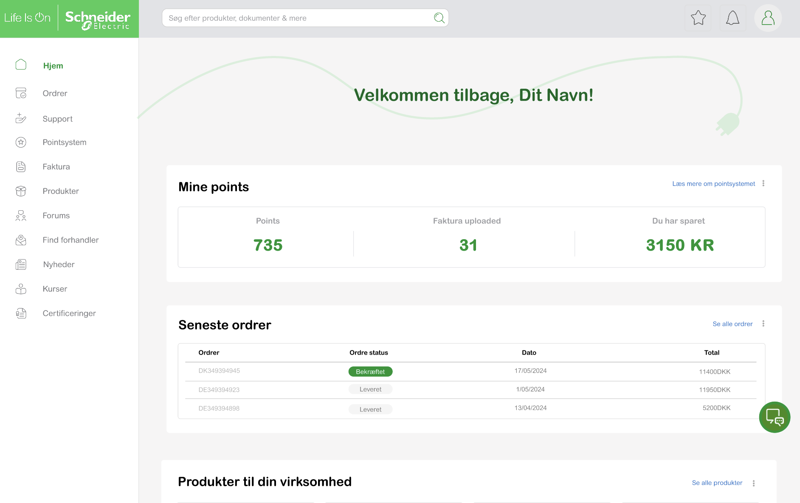
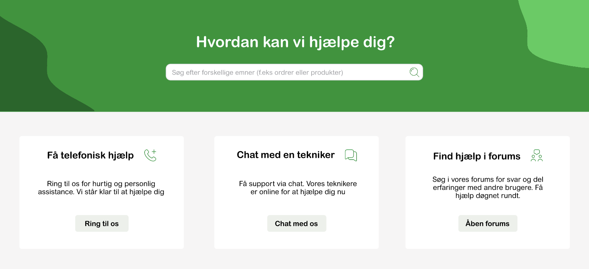
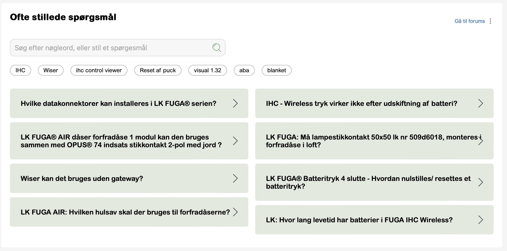
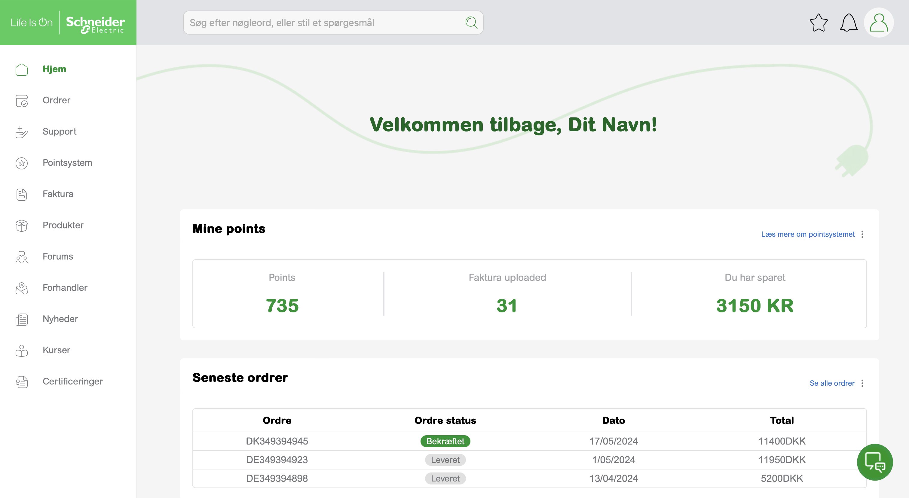
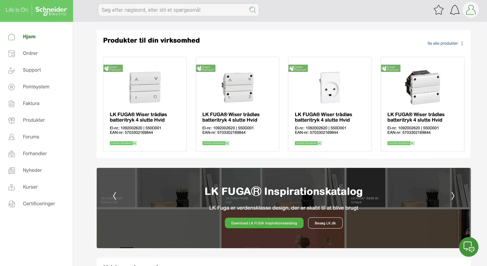
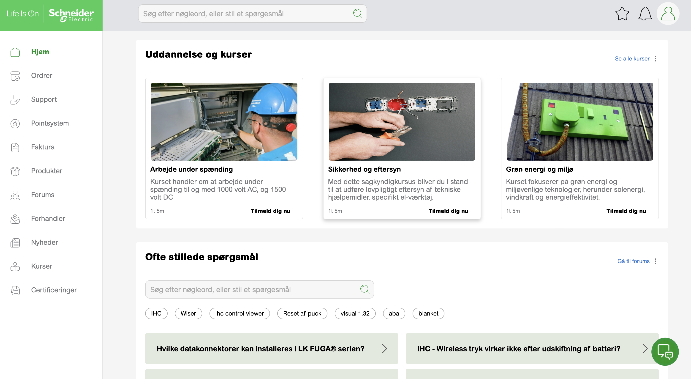
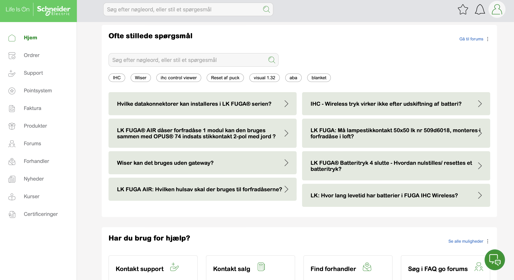

Kundeportal til elektrikere
Digital værktøj til Schneider Electric, der sigter mod at forbedre og styrke kunderelationen til elektrikere.

Hvordan kan en digital løsning styrke forholdet mellem Schneider Electric og elektrikerne
Oversigt
Schneider Electric er en global specialist inden for energistyring og automatisering med aktiviteter i over 100 lande. I Danmark har de opkøbt Lauritz Knudsen, hvis stikkontakter er installeret i mere end 80% af danske hjem og institutioner. Schneider har dog oplevet udfordringer med at fastholde stærke kunderelationer, da flere danske kunder ikke føler, at deres feedback bliver hørt og taget alvorligt.
Gennem vores research opdagede vi, at Schneider Electric ikke var tilstrækkeligt tilgængelige, når deres kunder havde brug for assistance.


I løbet af projektet startede vi med en grundig researchfase, hvor vi undersøgte kundernes oplevelse med Schneider Electric. Her blev det tydeligt, at der var et stort behov for forbedret kundesupport, da mange kunder oplevede manglende tilgængelighed, når de havde brug for hjælp. På baggrund af disse indsigter gik vi i gang med at designe og udvikle en løsning. En central funktion blev en optimeret kontaktside, der gjorde det muligt for kunderne at få hurtig assistance og føle sig hørt.
En Q&A blev blandt andet tilføjet, hvor eletrikere selv kunne gå ind og stille spørgsmål og få svar i et forum.
Resultat
Vi endte med at Vi skabe en intuitiv kundeportal, hvor vi lagde særlig vægt på hurtig og nem kommunikation. Processen involverede tæt samarbejde med både brugere og interessenter, hvilket sikrede, at løsningen imødekom deres behov effektivt.



